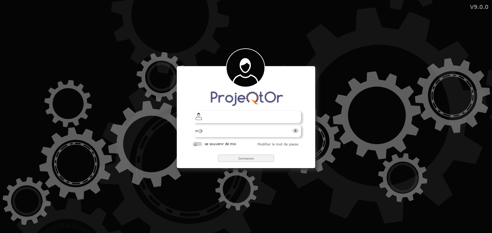

ProjeQtOr is an open source project management software that combines in one tool all the functionalities needed to organize your projects. It is simple, easy to use and covers a maximum of project management features. Its particularity, in addition to its completeness, is to be oriented towards quality. This means you can record all the events of your projects and thus simplify compliance with leading standards in quality management, be they ISO, CMMI, ITIL or other.
What’s new in version 9.0 ?¶
Find in this manual, every 3 months, the latest features integrated into ProjeQtOr.
We offer you a small overview of the major developments and you will find the full list of developments covered in the update here.
New Interface
ProjeQtOr offers you a whole new interface, more intuitive and more ergonomic. Finally a complete and sexy tool!
Features¶
ProjeQtOr is a “Quality based Project Organizer”.
It is particularly well suited to IT projects, but can manage any type of project.
It offers all the features needed to different Project Management actors under a unique collaborative interface.
Concepts¶
This chapter defines the concepts of ProjeQtOr.
They can be referred in the following chapters.
Agile Methods¶
This chapter includes ProjeQtOr features that allow you to practice agile methods.
Settings¶
ProjeQtOr provides a very rich user interface.
It may be frightening at first glance because of the very numerous elements it provides, but once you’ll get familiar to the structure of the interface you’ll discover that it is quite simple as all screens have the same frames and sections always have simular structure and position.
Graphical user interface¶
ProjeQtOr provides a very rich user interface.
It may be frightening at first glance because of the very numerous elements it provides, but once you’ll get familiar to the structure of the interface you’ll discover that it is quite simple as all screens have the same frames and sections always have simular structure and position.
Planning and Follow-up¶
ProjeQtOr provides all the elements needed to build a planning from workload, constraints between tasks and resources availability.
The main activity of Project Leader is to measure progress, analyse situation and take decisions. In order to ease his work, ProjeQtOr provides several reporting tools, from the well know Gantt chart, to many reports.